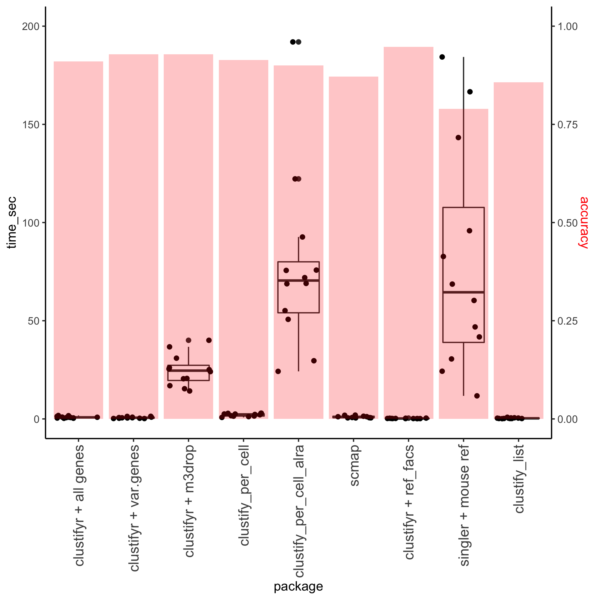

ref_tabula_muris_drop referencelibrary(tidyverse)
library(clustifyr)
library(clustifyrdata)
l_mat <- clustifyrdata::MCA_lung_mat
l_meta <- clustifyrdata::MCA_lung_meta
# find lung references, remove generic terms
lung_cols <- colnames(ref_tabula_muris_drop) %>%
grep("-Lung", ., value = TRUE)
tml_ref <- ref_tabula_muris_drop[, lung_cols]
tml_ref <- tml_ref[, -c(8, 13)]
# default with all genes
start <- proc.time()
res <- clustify(
input = l_mat,
ref_mat = tml_ref,
metadata = l_meta,
cluster_col = "Annotation"
)
res_allgenes <- cor_to_call(
cor_mat = res,
metadata = l_meta,
cluster_col = "Annotation"
)
end <- proc.time()
names(res_allgenes) <- c("MCA annotation", "clustifyr call", "r")
print(end - start)
#> user system elapsed
#> 1.330 0.468 1.802
print(res_allgenes, n = nrow(res_allgenes))
#> # A tibble: 32 x 3
#> # Groups: Annotation [32]
#> `MCA annotation` `clustifyr call` r
#> <chr> <chr> <dbl>
#> 1 Alveolar macrophage_Ear2 high(… alveolar macrophage-Lung 0.878
#> 2 Alveolar macrophage_Pclaf high… alveolar macrophage-Lung 0.710
#> 3 B Cell(Lung) B cell-Lung 0.834
#> 4 Ig−producing B cell(Lung) B cell-Lung 0.569
#> 5 Ciliated cell(Lung) ciliated columnar cell of tracheobronc… 0.819
#> 6 Plasmacytoid dendritic cell(Lu… classical monocyte-Lung-CLASH! 0.846
#> 7 Eosinophil granulocyte(Lung) leukocyte-Lung 0.712
#> 8 Neutrophil granulocyte(Lung) leukocyte-Lung 0.627
#> 9 Endothelial cell_Kdr high(Lung) lung endothelial cell-Lung 0.743
#> 10 Endothelial cell_Tmem100 high(… lung endothelial cell-Lung 0.802
#> 11 Endothelial cells_Vwf high(Lun… lung endothelial cell-Lung 0.761
#> 12 Basophil(Lung) mast cell-Lung 0.425
#> 13 NK Cell(Lung) natural killer cell-Lung 0.802
#> 14 Conventional dendritic cell_Gn… non-classical monocyte-Lung-CLASH! 0.786
#> 15 Stromal cell_Acta2 high(Lung) stromal cell-Lung 0.642
#> 16 Stromal cell_Dcn high(Lung) stromal cell-Lung 0.812
#> 17 Stromal cell_Inmt high(Lung) stromal cell-Lung 0.815
#> 18 Dividing T cells(Lung) T cell-Lung 0.717
#> 19 Nuocyte(Lung) T cell-Lung 0.756
#> 20 T Cell_Cd8b1 high(Lung) T cell-Lung 0.824
#> 21 Alveolar bipotent progenitor(L… alveolar epithelial type 2 cells-Lung 0.657
#> 22 AT1 Cell(Lung) alveolar epithelial type 2 cells-Lung 0.767
#> 23 AT2 Cell(Lung) alveolar epithelial type 2 cells-Lung 0.879
#> 24 Clara Cell(Lung) alveolar epithelial type 2 cells-Lung 0.730
#> 25 Dividing cells(Lung) alveolar epithelial type 2 cells-Lung 0.642
#> 26 Conventional dendritic cell_H2… dendritic cells and interstital macrop… 0.541
#> 27 Conventional dendritic cell_Mg… dendritic cells and interstital macrop… 0.786
#> 28 Conventional dendritic cell_Tu… dendritic cells and interstital macrop… 0.666
#> 29 Dendritic cell_Naaa high(Lung) dendritic cells and interstital macrop… 0.798
#> 30 Dividing dendritic cells(Lung) dendritic cells and interstital macrop… 0.670
#> 31 Interstitial macrophage(Lung) dendritic cells and interstital macrop… 0.803
#> 32 Monocyte progenitor cell(Lung) dendritic cells and interstital macrop… 0.572clustifyrdata packagefull_pbmc_matrix <- clustifyrdata::pbmc_matrix
full_pbmc_meta <- clustifyrdata::pbmc_meta
microarray_ref <- clustifyrdata::ref_hema_microarray
start <- proc.time()
res <- clustify(
input = full_pbmc_matrix,
ref_mat = microarray_ref,
metadata = full_pbmc_meta,
query_genes = pbmc_vargenes[1:500],
cluster_col = "classified"
)
res2 <- cor_to_call(res, threshold = 0.5)
end <- proc.time()
names(res2) <- c("manual annotation", "clustifyr call", "r")
print(end - start)
#> user system elapsed
#> 0.044 0.003 0.047
print(res2, n = nrow(res2))
#> # A tibble: 9 x 3
#> # Groups: cluster [9]
#> `manual annotation` `clustifyr call` r
#> <chr> <chr> <dbl>
#> 1 Memory CD4 T CD4+ Effector Memory 0.594
#> 2 Naive CD4 T CD4+ Effector Memory 0.587
#> 3 CD8 T CD8+ Effector Memory 0.602
#> 4 NK Mature NK cell_CD56+ CD16+ CD3- 0.553
#> 5 Platelet unassigned 0.294
#> 6 CD14+ Mono Monocyte 0.607
#> 7 FCGR3A+ Mono Monocyte 0.577
#> 8 DC Myeloid Dendritic Cell 0.579
#> 9 B Naïve B-cells 0.642using Tablua Muris (drop and facs samples) 12 shared tissues, which can be downloaded as seurat objects
default clustify, with all genes
clustify, pulling var.genes from seurat objects
clustify, using M3Drop for feature selection
clustify, using per_cell = TRUE option, and then assign cluster consensus ident with collapse_to_cluster = TRUE
clustify, after ALRA imputation, using per_cell = TRUE option, and then assign cluster consensus ident with collapse_to_cluster = TRUE
scmap-cluster
clustify, using ref_tabula_muris_facs
singleR, using default built-in mouse references without fine tuning
default clustify_list
